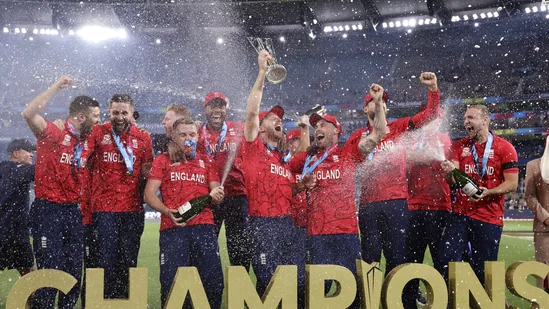

NEWS-1
NEWS-2
NEWS-3
'From holy land of Krishna': Arvind Kejriwal on Gujarat CM candidate Gadhvi's constituency

'Rohit only decided where to hide on the field. He didn't take a single call': Ex-IND cricketer tears into India captain'

Pakistan vs England, T20 World Cup 2022 Final: Action in images
With just few weeks remaining for the Gujarat elections, the Aam Aadmi Party on Sunday announced that its chief ministerial candidate - Isudan Gadhvi - will be contesting from the "holy land of Lord Krishna". The 40-year will be fielded by the party - looking at the expansion of its national footprint - from Jam Khambhalia in the Devbhumi Dwarka district.
Under Rohit Sharma, the Indian cricket team has suffered defeats in two big multi-team tournaments in three months. In September, India failed to qualify for the semifinals of the Asia Cup, which was a big blow following defeats to Pakistan and Sri Lanka in the Super 4. Series wins over Australia and South Africa at home restored some hope but it soon turned into disappointment as India went crashing out of the T20 World Cup following a 10-wicket hammering at the hands of England in the semifinal.
Sam Curran's three-wicket haul and Ben Stokes' unbeaten half century helped England win their second T20 World Cup title and become the first team to hold both the ODI and T20I world titles.